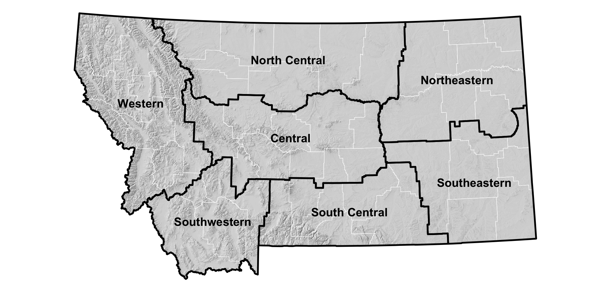
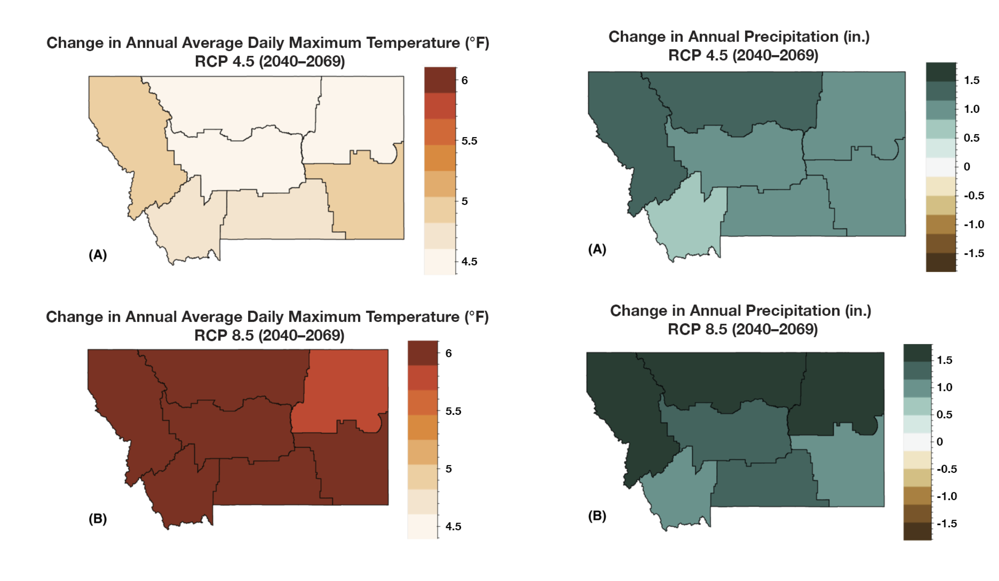
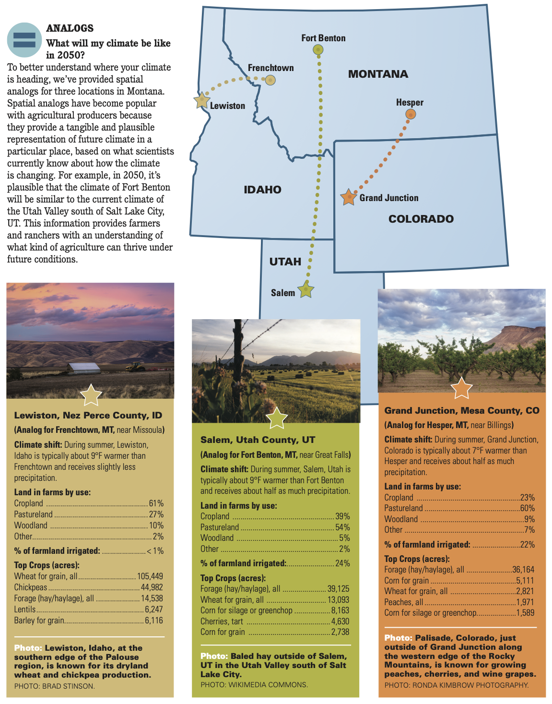

By mid-century, more winter precipitation will fall as rain rather than snow, lessening April snowpack. Photo: Kevin Hyde.
Agriculture is an incredibly important part of Montana’s culture, economy, and landscape, and an industry that is directly impacted by changes in temperature, precipitation, and extreme weather events. Each fall, we provide information about how environmental conditions in Montana are projected to change over the next 30 years. We realize that agricultural operations in Montana are diverse and that each producer will need to respond differently to changing conditions. Below, we provide information from the Montana Climate Assessment (MCA), an effort to synthesize, evaluate, and share credible and relevant scientific information about how our climate is changing in Montana, produced by Montana State University and the University of Montana. This is only a summary of the MCA — visit MontanaClimate.org for more details on changes in your region.
Climate is driven largely by energy from the sun, and how it is reflected, absorbed, transformed (as in photosynthesis), or re-radiated (as heat). Each of these processes influences climate through changes to temperature, the hydrologic cycle, vegetation, and atmospheric and ocean circulation patterns. A changing climate encompasses both increases and decreases in temperature, as well as shifts in precipitation, changing the risk of certain types of severe weather events, and altering other features of the climate system.
To understand how a changing climate is impacting Montana, we must first understand Montana’s unique geography. Montana is the fourth largest state in the nation and its location within North America exposes the state to a mix of diverse weather systems that originate from the Pacific Ocean, the Arctic, and sometimes subtropical regions. The Continental Divide, which has a predominantly north-south alignment in Montana, effectively splits the state into climatically distinct western wet and eastern dry regions with respect to moisture from eastward-flowing Pacific Maritime air. The state also includes the headwaters of three major river basins—the Missouri, Snake/Columbia, and Saskatchewan — two of which encompass almost one-third of the landmass of the conterminous United States. Consequently, Montana’s climate influences the water supply of a large portion of the country, and its water supports communities, ecosystems, and economies far beyond its borders.
Montana’s unique geography means that climate varies across the state, as it does across the nation. The Montana Climate Assessment aggregates past climate trends and future climate projections into seven Montana climate divisions. These seven climate divisions are a subset of the 344 divisions defined by the National Oceanic and Atmospheric Administration (NOAA) based on a combination of climatic, political, agricultural, and watershed boundaries.

Temperature and precipitation are already changing in Montana and are projected to change more in the future. More specifically, annual average temperatures have been increasing since 1950. While annual average precipitation has remained steady, we are seeing important seasonal changes, including the trends listed below. It is important to note that we don’t necessarily see these impacts every year, but over time (on average) they are becoming more common.
These trends are expected to intensify as we move toward the middle of the century.
The Montana Climate Assessment outlines the following changes to temperature and precipitation. Each point is followed by an expression of confidence. For more information, see the Climate chapter of the Montana Climate Assessment.

The maps above show the projected increase in annual average daily maximum temperature (°F) and annual total precipitation (inches) for each climate division in Montana for the periods 2040–2069. Because of uncertainties related to how technology, economics, and policy will influence carbon emissions in the future, the Montana Climate Assessment utilizes two scenarios (RCP 4.5 where carbon emissions peak around 2040 and then decline, and RCP 8.5 where carbon emissions continue to increase through the 21st century). Under both scenarios Montana is projected to be much warmer in the future.
Agriculture is a key industry in Montana, generating over $3.5 billion in 2017 through the sale of agricultural commodities (USDA NASS 2017). Montana agriculture includes a mosaic of dryland and irrigated agriculture, commodity and specialty cropland, and native and planted rangeland. Farms and ranches in the state contribute to feeding the country and the world, provide important open space and wildlife habitat, and support rural communities and the Montana economy.
Montana agricultural producers have long contended with changes in climate and weather, including extreme events and climate variability. The changes outlined above impact all aspects of Montana agriculture, from rangeland productivity and crop yields to disease, pests, and weeds. However, predictions about the exact ways that climate will impact agricultural producers are difficult, because every operation is different and there are many uncertainties related to climate projections, commodity prices and the cost of inputs, available technology and insurance, among others. Each producer knows their land and operation and is best positioned to understand how current and future changes will affect them.
Here are some of the projections about impacts to Montana agriculture. Each point is followed by an expression of confidence in that message. For more information, see the Agriculture chapter of the Montana Climate Assessment.
Social and economic resilience to withstand and adapt to variable conditions has always been a hallmark of Montana farmers’ and livestock producers’ strategies for coping with climate variability. Producers build resilience in different ways, depending on their operations and their goals. Diversified cropping systems, including rotation with pulse crops and innovations in tillage and cover-cropping, along with other measures to improve soil health, may enable producers to adapt to the changes described here.
Resources for producers can be found online at the USDA Northwest Climate Hub, the USDA Northern Plains Climate Hub, the Natural Resources Conservation Service, USDA Farm Service Agency, and Montana State University Extension.
